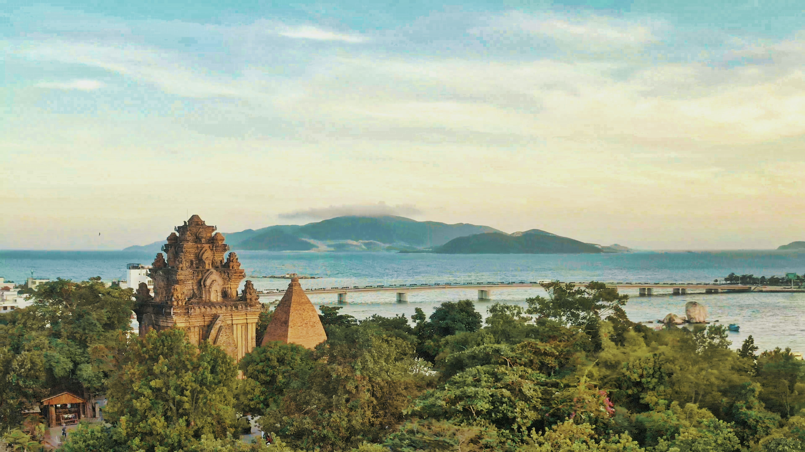
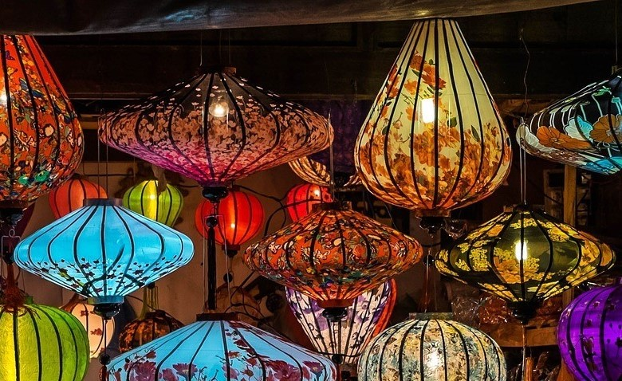
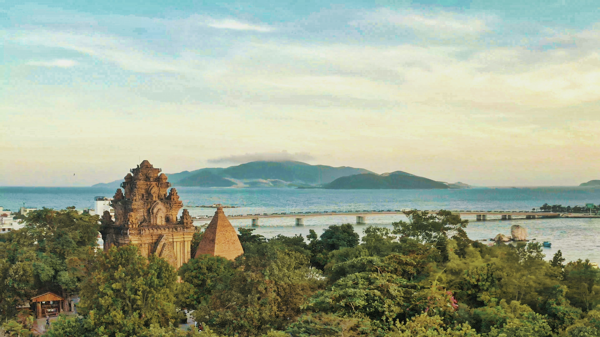
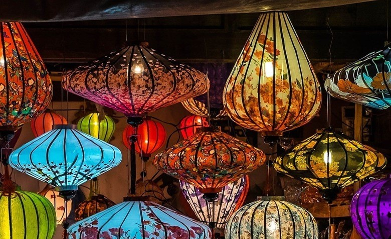

文化
北と南の両方の旧正月の習慣の間に干渉があります。 その上、中央地域には独特で斬新な伝統的な習慣もあります。あらゆる種類の花を展示する：中央地域の人々は、黄色いアプリコット、甘い桃、キンカン、またはその他の観賞用植物や花を展示して、テト中に展示することができます。テトトレイ：中央トレイ多くの場合、banhchungとbanhtetの両方があります。 中部地方のテットトレイの料理には、ピクルス、フエソーセージ、冷凍肉、ラクサチキン、フエロール、ボイルドポーク、サワービーンズプラウト、乾燥竹シュート、フエ春雨、蓮の根のサラダ、胃のサラダが含まれます。テットの休日に先祖に提供するギアまたはビーフテンドンサラダ、エビのペースト、春のロールなどの他の特別な料理。
旅行
 



嵐、鉄砲水などの自然の影響を強く受けている一帯の土地です。自然、自然のため、歴史的な景勝地のリストは無視しません。連動する要塞は、帝国都市、帝国都市、紫禁城です。それはグエン王朝の形成、繁栄、衰退を証明し、過去のフエの象徴です）。男。時間）。 VinhLocの胡朝の城塞-ThanhHoa（これは、特にベトナムと東アジアのユニークな構築メディアを組み合わせた大きな石造りの技術と芸術によるマクロ作品です。南アジア一般）古代アジアの文化と現代の西洋文化）。フォンニャ-クアンビンのケバン洞窟（貴重な場所、地質、住所だけでなく、図面、マクロ、何百万年にもわたる手付かずの自然など、世界中から観光客を魅了しています）。
料理
誰もが特別な休日や経験を持っているわけではないカラフルな宝物です。 クアンナムを参照すると、フォーホイの典型的な香りのよいガーデンチキンタムキカオラウ、豊かな風味のクアンヌードル、クイニョン魚の春雨、ニンホアスプリングロール、ビンディン地区市場のスプリングロール、リトルケーキ、ニャに言及せずにはいられませんトランフィッシュスープケーキ、ホイアンチキンライス、甘酸っぱい肌... そして、フエの王宮での料理は言うまでもありません。 中央の土地の、古代の王室の貴族と影響力の両方を持っています